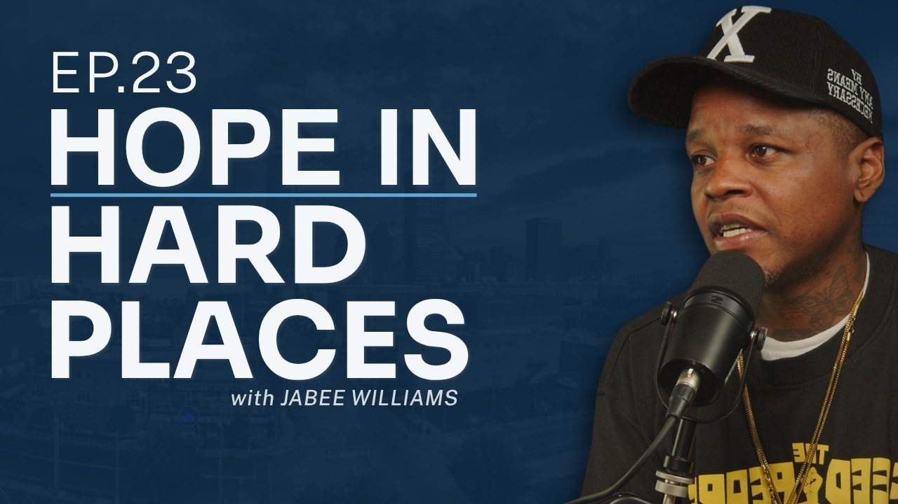

What does peace look like before it becomes a headline?
Sometimes it looks like a phone call before a fight turns into a shooting.
Sometimes it looks like a trusted person sitting down with two families.
Sometimes it looks like fixing an air conditioner because the heat in a house is adding fuel to somebody’s grief.
In this episode of Voices of OKC, Jed Chappell sits down with Jabee Williams — artist, Emmy Award winner, entrepreneur, and community advocate — for a conversation about Oklahoma City, violence, art, proximity, and hope.
Jabee shares about growing up on Oklahoma City’s Eastside, losing people he loved to violence, and the responsibility he feels to show young people that their world can be bigger than the block, the neighborhood, or the cycle they inherited.
He also talks about two major pieces of his work:
Live Free Oklahoma, a community violence intervention effort working to reduce gun violence and build safer communities across Oklahoma.
With Love OKC, an art initiative helping young people tell their stories through murals, creative expression, and public art.
This conversation is about more than programs.
It is about presence.
It is about why the people closest to the pain often carry the clearest wisdom.
It is about what Oklahoma City can become when social development matters as much as economic development.
And it is about why hope is not a soft idea. Sometimes hope is the very thing that keeps someone from giving up on their city.
Jed and Jabee talk about:
- Growing up on Oklahoma City’s Eastside
- The reality of violence and incarceration in families and neighborhoods
- Why credible messengers matter
- What community violence intervention actually looks like
- The role of art, murals, and storytelling in healing
- Why development must include the people most affected by it
- The future Jabee still hopes to see in Oklahoma City
Jabee Williams:
https://www.mynameisjabee.com/
Jabee on Instagram:
https://www.instagram.com/mynameisjabee/
Live Free Oklahoma:
https://livefreeoklahoma.com/
Live Free Oklahoma on Instagram:
https://www.withloveokc.org/
With Love OKC on Instagram:
https://www.instagram.com/withloveokc/
Juneteenth on the East:
https://www.withloveokc.org/juneteenth
STAAR Foundation:
https://www.staarfoundation.org/
Urban Bridge:
https://www.urbanbridge.org/
Boys & Girls Clubs of Oklahoma County:
https://www.bgcokc.org/
Millwood Public Schools:
https://www.millwoodps.org/
Oklahoma City Public Schools — Emerson South:
https://emersonsouth.okcps.org/
City Center:
https://okcitycenter.org
Voices of OKC is a podcast from City Center featuring thoughtful conversations with people helping shape Oklahoma City through leadership, service, creativity, restoration, and hope.
Learn more about City Center:
https://okcitycenter.org